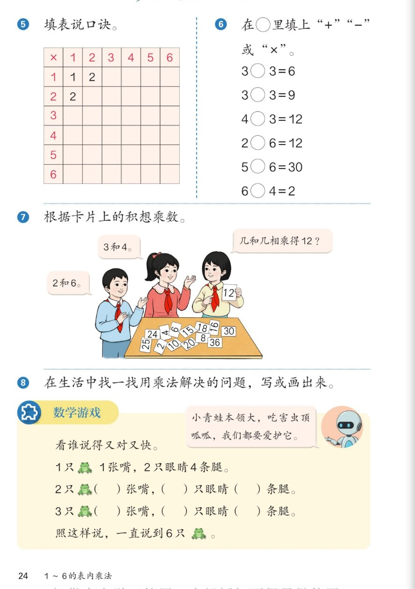

🐸 1~6的表内乘法 · 课本第 24 页 · 练一练 5~8 与数学游戏
人教版《数学》二年级上册 · 有声图文带读 · 先想后看解析
题数
6
认知
2
强化
3
拓展
1
本页重点
填表·选符号·想乘数·数青蛙
🎧 分两步学：
① 解析教材图片
——纯声音读图，读到哪一块哪一块闪动提示；关键处先倒计时让你思考，再在图片下方给出解析并朗读。
② 分层提问练习
——六道分层题（认知 / 强化 / 拓展），先思考再展开解析、朗读参考答案；这一步不再回到图片。
也可以随时点任意一句话、图上任意一块单独听；点课本文字卡还会展开答案。
教材图片（点块听读，读到哪块哪块闪）

📖 人教版《数学》二年级上册 · 课本第 24 页 · 图片仅供个人学习，版权归人民教育出版社所有
🤔 想一想（点我可跳过）
课本的文字（点句子：听读 + 看答案）
课本第 5 题
填表说口诀：行、列相乘填中间，边填边说口诀。
看答案 ▾
方法：
行数×列数=格子里的积，
边填边念口诀
。
例如：2 行 3 列 → 2×3=6，"二三得六"；5 行 4 列 → 5×4=20，"四五二十"。
🌈 已填好的 1、2、2 就是一一得一、一二得二、一二得二
课本第 6 题
在 ○ 里填上"+""−"或"×"：3○3=6 3○3=9 4○3=12 2○6=12 5○6=30 6○4=2
看答案 ▾
3+3=6
；
3×3=9
（三三得九）；
4×3=12
（三四十二）；
2×6=12
（二六十二）；
5×6=30
（五六三十）；
6-4=2
。
🌈 先看得数，再试加减乘哪种能算出来
课本第 7 题
卡片上的积是 12：3 和 4、2 和 6。几和几相乘得 12？
看答案 ▾
在 1~6 的口诀里：
3×4=12
（三四十二）、
2×6=12
（二六十二）。
🌈 同一个积可能来自不同的口诀
课本第 7 题（桌上卡片）
25、24、2、10、4、6、15、20、8、18、36、16、30 —— 各想哪句口诀？
看答案 ▾
25
=5×5；
24
=4×6；
2
=1×2；
10
=2×5；
4
=2×2 或 1×4；
6
=1×6 或 2×3；
15
=3×5；
20
=4×5；
8
=2×4；
18
=3×6；
36
=6×6；
16
=4×4；
30
=5×6。
🌈 有的积能想出两句口诀，说得越多越棒
课本第 8 题
在生活中找一找用乘法解决的问题，写或画出来。
看答案 ▾
示例一：
1 包纸巾 3 元，买 4 包要多少钱？4×3=
12
（元）。
示例二：
1 副手套 2 只，5 副手套几只？2×5=
10
（只）。
🌈 找"每份同样多"的事情，就能用乘法
数学游戏
数青蛙：1 只青蛙 1 张嘴，2 只眼睛 4 条腿……
看答案 ▾
1 只：
1 张嘴、2 只眼睛、4 条腿；
2 只：
2 张嘴、
4
只眼睛、
8
条腿（2×2、2×4）；
3 只：
3 张嘴、
6
只眼睛、
12
条腿（3×2、3×4）。
数学游戏（接）
照这样说，一直说到 6 只青蛙。
看答案 ▾
4 只：
4 张嘴、
8
只眼睛、
16
条腿（4×2=8、4×4=16）；
5 只：
5 张嘴、
10
只眼睛、
20
条腿（5×2=10、5×4=20）；
6 只：
6 张嘴、
12
只眼睛、
24
条腿（6×2=12、6×4=24）。
分层提问练习（先想后看解析）
➕
认知
3○3=9 和 6○4=2 的圆圈里填什么？为什么？
看解析
🤔 想一想
解析：
3
×
3=9（三三得九）
6
−
4=2
💡 都是 3 和 3：得 6 填 +，得 9 填 ×——先看得数再选符号
✖️
认知
4○3=12 和 2○6=12 填什么符号？各用哪句口诀？
看解析
🤔 想一想
解析：
4
×
3=12（三四十二）
2
×
6=12（二六十二）
🃏
强化
桌上卡片 18 和 24，各是几和几相乘？
看解析
🤔 想一想
解析：
18 = 3×6（三六十八）
24 = 4×6（四六二十四）
💡 顺着口诀想：几和几相乘得这个积
🐸
强化
数青蛙：4 只、5 只青蛙各有几张嘴、几只眼睛、几条腿？
看解析
🤔 想一想
解析：
4 只：4 张嘴、
8
只眼睛、
16
条腿
5 只：5 张嘴、
10
只眼睛、
20
条腿
💡 嘴×1、眼×2、腿×4
📋
强化
填表：第 4 行从左到右填什么？有什么规律？
看解析
🤔 想一想
解析：
4、8、12、16
口诀：一四得四、二四得八、三四十二、四四十六
💡 横着每次多 4；横竖读出来的口诀一样
🌈
拓展
照"数青蛙"的样子，自己编一首"数××"儿歌。
看解析
🤔 想一想
解析（开放题）：
示例·数螃蟹：
1 只螃蟹 2 只钳、8 条腿；2 只螃蟹 4 只钳、16 条腿……
示例·数小狗：
1 只小狗 4 条腿；2 只小狗 8 条腿……（4 的口诀）
🌈 编得顺、算得对就行，可以边拍手边念
① 解析教材图片
② 分层提问练习
⏹ 停止
纯声音 + 高亮跟随 · 想好才出解析
← 返回导航